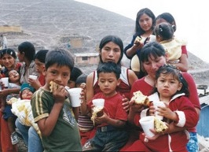
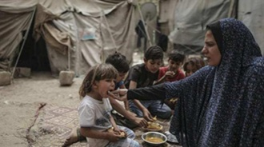

La hambruna económica es causada principalmente por la pobreza extrema, el desempleo, la inflación y la desigual distribución de los recursos. Cuando los precios de los alimentos aumentan y los ingresos de las familias no son suficientes, millones de personas quedan sin acceso a una alimentación adecuada. Los conflictos armados, la corrupción y las crisis económicas agravan aún más la situación, provocando que comunidades enteras sufran desnutrición, enfermedades y, en los casos más graves, la muerte por falta de alimentos. Es una realidad dura que afecta a millones de personas en todo el mundo y evidencia las profundas desigualdades existentes en la sociedad.

La hambruna económica es un grave problema social porque impide que millones de personas satisfagan una necesidad básica: alimentarse. La falta de recursos económicos provoca desnutrición, problemas de salud, abandono escolar y una menor calidad de vida. Además, aumenta la desigualdad entre los sectores de la población, afectando principalmente a las familias más vulnerables. Esta situación no solo perjudica a quienes la padecen directamente, sino que también limita el desarrollo y el bienestar de toda la sociedad.

La hambruna económica puede combatirse mediante la creación de empleos dignos y bien remunerados que permitan a las familias cubrir sus necesidades básicas. También es fundamental controlar la inflación y garantizar que los alimentos esenciales tengan precios accesibles para toda la población. Los gobiernos deben invertir en programas sociales, educación y apoyo al campo para aumentar la producción de alimentos y reducir la dependencia de las importaciones.
Además, es importante fortalecer los sistemas de ayuda alimentaria para atender a las personas en situación de pobreza extrema. La cooperación entre gobiernos, organizaciones internacionales y la sociedad puede ayudar a distribuir recursos de manera más justa y eficiente. Combatir la corrupción, mejorar la infraestructura y promover el desarrollo económico sostenible son acciones clave para reducir el hambre y ofrecer mejores oportunidades a las futuras generaciones. Con un esfuerzo conjunto, es posible disminuir significativamente este problema social y mejorar la calidad de vida de millones de personas.